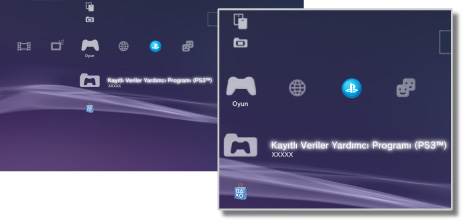

Oyun > Oyun kategorisi
Oyun kategorisi
Aşağıdaki simgeler  (Oyun) altında görüntülenir. Görüntülenen simgeler kullanım koşullarına göre değişir.
(Oyun) altında görüntülenir. Görüntülenen simgeler kullanım koşullarına göre değişir.

 |
PlayStation®Store | PlayStation®Store'dan bilgi görüntüleyin. |
|---|---|---|
 |
Oyundan Çık | PlayStation®3 formatındaki yazılımdan çıkın. Bu simge yalnızca oyun oynama sırasında görüntülenir. |
 |
(başlık adı) | PlayStation®3 formatındaki yazılım başlığını oynatın. Simge seçildiğinde bir görüntü görüntülenir. |
  |
PlayStation®2 Formatındaki Disk | PlayStation®2 formatındaki yazılım başlığını oynatın. |
 |
PlayStation® Formatındaki Disk | PlayStation® formatındaki yazılım başlığını oynatın. |
 |
Kayıtlı Veriler Yardımcı Programı (PS3™) | PlayStation®3 formatındaki yazılım için kayıtlı veriler hakkındaki bilgileri kopyalayın / silin veya görüntüleyin. |
 |
Kayıtlı Veriler Yardımcı Programı (minis / PSP™) | minis ve PSP™Game yazılımı için kaydedilen tarihteki bilgileri kopyalayın / silin veya görüntüleyin. |
 |
Memory Card Yardımcı Programı | PlayStation®2 / PlayStation® formatındaki yazılım için verileri kaydetmek için dahili bellek kartları yuvaları oluşturun ve atayın. Ayrıca kayıtlı veriler hakkında bilgileri kopyalayabilir / silebilir veya görüntüleyebilirsiniz. |
 |
PS Vita Sistemi Uygulama Yardımcı Programı | Oyunun PS Vita sisteminde oynatılan kayıtlı verilerini veya uygulama verilerini (oyun verileri) PS Vita sisteminden PS3™ sistemine yedeklediğinizde, veriler PS Vita sistemi uygulama yardımcı programına kaydedilir. |
|
Oyun Verileri Yardımcı Programı | Bazı oyunlar için ek veriler kaydedilebilir. Verilerdeki bilgileri silebilir veya görüntüleyebilirsiniz. |
 |
(Sistem depolama alanında yüklü PlayStation®3 veya PlayStation®2 formatındaki yazılım) | Sistem depolama alanında yüklü PlayStation®3 veya PlayStation®2 formatındaki yazılım. Oyunun bir küçük resim görüntüsü görüntülenir. |
 |
(sistem depolama alanına indirilen veriler) | Bu simge sistem depolama alanına indirilen oyun veya genişletme verileri için görüntülenir. Başlatıldığında veriler yüklenir. Simge veri türüne bağlı olarak değişir. |
İpuçları
- Ebeveyn denetimiyle kısıtlanan içerik için
 veya
veya  görüntülenir. İçerik dört basamaklı bir parola girilerek oynatılabilir. Parola
görüntülenir. İçerik dört basamaklı bir parola girilerek oynatılabilir. Parola  (Ayarlar) >
(Ayarlar) >  (Güvenlik Ayarları) altında ayarlanabilir.
(Güvenlik Ayarları) altında ayarlanabilir. - HDCP (High-bandwidth Digital Content Protection) standardıyla uyumlu olmayan bir aygıt bir HDMI kablosu kullanılarak sisteme bağlanırsa video ve/veya ses sistemden çıkarılamaz.
- Blu-ray Disc içindeki telif hakkı korumalı içerik HDCP standardıyla uyumlu bir aygıta bağlı HDMI kablosu kullanılırken yalnızca 1080p'de çıkarılabilir.
- Nadir durumlarda, PS3™ sisteminde oynatılırken diskler ve diğer ortamlar düzgün çalışmayabilir. Bu, temel olarak yazılımın üretim veya kodlama işlemindeki çeşitlilikler nedeniyledir.
Uyarılar
- Bazı PlayStation®2 veya PlayStation® formatındaki yazılım başlıkları PS3™ sisteminde PlayStation®2 veya PlayStation® sistemlerinde çalıştıklarından farklı çalışabilir veya PS3™ sisteminde düzgün çalışmayabilir.
- PlayStation®2 formatındaki diskler bazı PS3™ sistemlerinde oynatılamayabilir. Ayrıntılar için, [Oynatılabilir Disk Türleri] konusuna bakın, bölgeniz için olan SIE Web sitesini ziyaret edin veya PS3™ sisteminizle verilen belgeleri inceleyin.